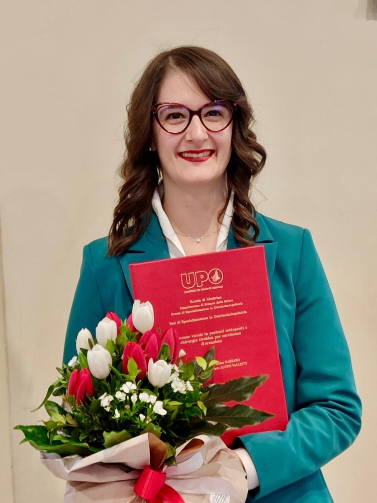
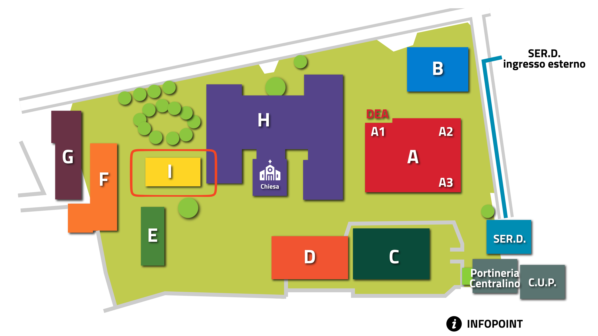

Prima visita ORL
Valutazione completa di orecchio, naso e gola.

Medico Chirurgo — Specialista in Otorinolaringoiatria a Domodossola
Prenota un appuntamentoSono Medico Chirurgo specialista in Otorinolaringoiatria, formata presso l'Università del Piemonte Orientale, dove ho conseguito con il massimo dei voti sia la laurea in Medicina e Chirurgia sia la specializzazione in Otorinolaringoiatria. Attualmente presto servizio come Dirigente Medico presso la SOC di Otorinolaringoiatria dell'ASL VCO.
Ho maturato un'ampia esperienza, sia negli adulti che nei bambini, nella gestione delle principali patologie del distretto testa-collo: disturbi della voce, malattie del naso e dei seni paranasali, patologie dell'orecchio e disturbi dell'equilibrio.
Il mio obiettivo è garantire sempre una valutazione attenta, personalizzata e basata su un linguaggio chiaro, orientata al benessere del paziente e alla sua qualità di vita.
Valutazione completa di orecchio, naso e gola.
Studio endoscopico di laringe e corde vocali.
Per vertigini e disturbi dell'equilibrio.
Audiometria tonale, vocale e impedenzometria.
Ospedale San Biagio
Largo Caduti Lager Nazisti, 1
28845 Domodossola (VB)
Palazzina I — Poliambulatori
